Le Comte Charles-André Pozzo di Borgo : le symbole de l’amitié franco-russe
par Natalia TANCHINA
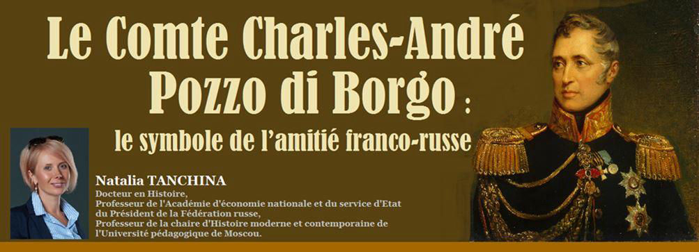
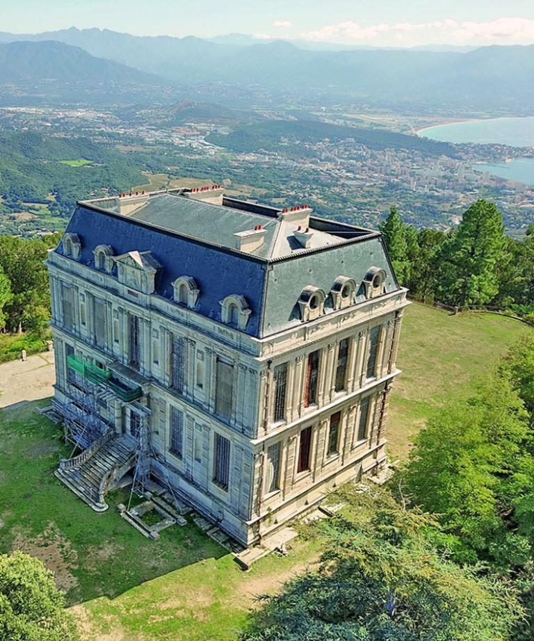 Le château de la Punta a été construit à la fin du XIXème siècle (entre 1886 et 1891) avec les pierres du Palais des Tuileries, démontées et transportées en Corse, à l’initiative du Comte Charles-André Pozzo di Borgo.Avec l’histoire de la Russie on lie deux Corses fameux. Le premier est venu en Russie avec la Grande Armée et avec la guerre, l’autre a consacré tous ses talents diplomatiques à sa grandeur. Le nom du premier est connu de tout le monde, le nom du second n’est connu que par les spécialistes. Le premier c’est l’empereur Napoléon, l’autre est son cousin, l’ami de sa jeunesse, puis l’ennemi de sang, « l’ennemi juré » d’après l’expression d’historien Michel Vergé-Franceschi, Charle-André Pozzo di Borgo (1764-1841)1. Il aura consacré 35 ans de sa vie au service de la Russie. Pendant un quart de siècle, il a dirigé l’ambassade de Russie en France, puis pendant quatre ans, il a été ambassadeur de Russie en Angleterre. Au XIXème siècle le nom de Pozzo est devenu le nom commun : beaucoup de Russes pensaient que «Pozzo» était le nom d’une fonction diplomatique2.
Mais comment ce fier aristocrate corse s’est-il retrouvé au service russe ? Un autre diplomate très connu, le Prince Charles Maurice de Talleyrand, a déclaré que le principal motif des actions de Pozzo di Borgo était la haine corse. Pour lui, c’était la vendetta qui l’avait amené en Russie. Pour comprendre cela, allons en Corse, dans le village d’Alata, à quelques kilomètres d’Ajaccio. C’est ici que Charles-André est né le 8 mars 1764. C’était une période difficile pour les habitants de l’île : les Corses, dirigés par Pascal Paoli, se sont battus pour l’indépendance de Gênes, qui possédait l’île. En 1768, les Génois cédèrent l’île à la France, mais les Corses n’abandonnèrent pas leurs espoirs d’indépendance.
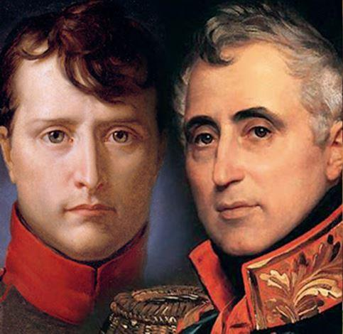Parmi les élites corses, il y avait aussi ceux qui sympathisaient avec les Français. La famille Buonaparte en faisait partie. Au fil des siècles, les clans Pozzo di Borgo et Buonaparte ont noué des liens d’alliance et de rivalité, de parenté et d’affaires ; les représentants de la famille Pozzo di Borgo ont souvent été les avocats de la famille Buonaparte. Charles-André lui-même, par tradition familiale, a reçu une formation juridique et a commencé sa carrière comme avocat de Buonaparte. Avec le futur Empereur des Français, il était familier depuis son enfance, et dans leur jeunesse, ils sont devenus des amis intimes.
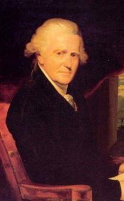Cependant, la Révolution française a écarté leurs voies : la famille Pozzo di Borgo sympathisait avec les monarchistes constitutionnels (en 1791 Pozzo di Borgo est devenu député de l’Assemblée nationale législative), la famille Buonaparte était parmi les partisans des Jacobins. La vie de Charles-André s’est développée comme un roman d’aventure ou comme un film sur James Bond. Avec Pascal Paoli, il s’opposait à la politique des Français sur l’île ; les membres de la famille Buonaparte ont été déclarés traîtres et un prix a été attribué pour les têtes des hommes de la famille Buonaparte. Napoléon Buonaparte a été arrêté par les hommes de Pozzo di Borgo, mais il a pu échapper à la captivité. L’ancienne amitié a été remplacée par la haine et s’est teintée aux couleurs de la vendetta.
D’ailleurs, Pozzo di Borgo n’est pas resté longtemps sur l’île. Fuyant les représailles françaises, les chefs corses se sont empressés de remettre leur petit état sous protectorat britannique. Mais le pouvoir des Anglais était éphémère, et en 1797, les Français sont redevenus maîtres de l’île.
Pozzo fuit alors en Angleterre, où il reçoit une pension annuelle de 400 livres. À partir de ce moment, la vie d’un exilé politique et d’un « diplomate vagabond » a commencé pour lui. C’est durant la Révolution, personnifiée à cette époque par un homme, Napoléon Bonaparte, qu’il a vu un ennemi qui l’a privé de sa patrie. On peut dire que le credo de vie de Pozzo di Borgo était désormais le suivant : nuire autant que possible à Bonaparte sans nuire à la France.
***
Un jeune homme charmant, beau et élégant, brillant d’esprit et en même temps préservant le « détachement aristocratique », avec un esprit analytique et une confiance dans les jugements, Pozzo di Borgo est rapidement devenu une figure importante dans la haute société européenne. Il est diplomate de naissance et diplomate par excellence. Il est aristocrate dans son âme et un homme politique de salon. Il est plein d’esprit en société, et veut être au centre de la vie courtoise et politique bien que ses ressources matérielles soient souvent limitées et pas toujours suffisantes à son goût raffiné.
Pourquoi Pozzo a choisi de servir la Russie ? Quand il est à Vienne, en 1804, l’ambassadeur de Russie en Autriche, le comte Andreï Rasoumovsky, lui propose cette idée. Pozzo n’accepte cette proposition qu’après de longues réflexions car il demeure choqué par l’assassinat de l’Empereur Paul Ier.
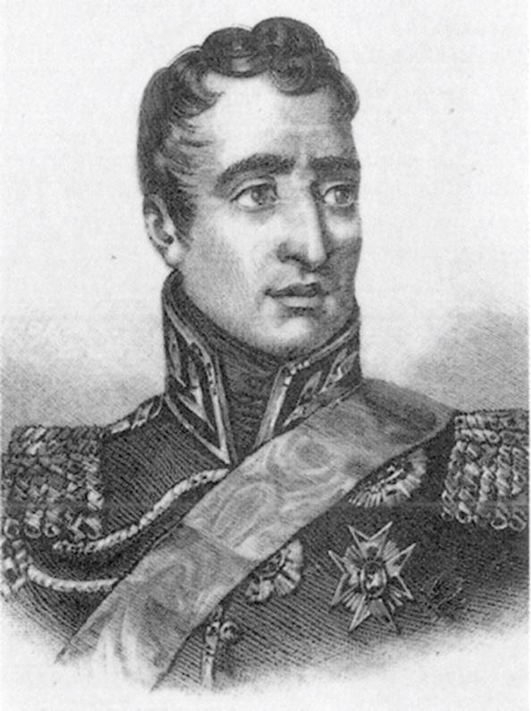Dans une lettre au Ministre des Affaires étrangères le comte Adam Сhartorygsky, Pozzo explique sa décision dans les termes très galants. Si on traduit ces mots de la langue diplomatique dans le langage commun, on peut voir que le motif principal est la prospérité matérielle et l’appréciation de son mérite3. Ainsi, en 1805, le Corse Pozzo di Borgo, qui ne connaît pas la langue russe, est au service du Tsar et se fait appeler, à la manière russe, Karl Osipovich.
Dans la plupart des ouvrages consacrés à Pozzo di Borgo son activité est analysée dans le contexte de son opposition avec Napoléon et s’achève par la fin des guerres napoléoniennes.
Pourtant son activité diplomatique pendant les années suivantes, bien que pouvant apparaître moins romantique et aventureuse, n’en est pas moins effective et fructueuse. Pozzo di Borgo est à l’origine du nouveau système des relations internationales. Le système de Vienne et le concert européen sont en quelque sens le mérite de Pozzo. En 1814 pendant le Congrès de Châtillon, alors que Napoléon est encore puissant, il agit avec conviction pour la restauration des Bourbons.
C’est Pozzo di Borgo qui après le Congrès de Châtillon est envoyé en Angleterre chez le futur roi Louis XVIII pour lui proposer la couronne. Quand les succès de la coalition font venir le Roi à Paris, Pozzo, son « conseiller-gardien », l’accompagne en qualité de commissaire général du gouvernement français. Le 2 avril il devient général-aide de champ et est accrédité comme envoyé extraordinaire et ministre plénipotentiaire d’Alexandre Ier. La déclaration aux Parisiens promulguée au nom des Alliés après l’occupation de Paris est écrite par Pozzo di Borgo ; Alexandre Ier n’y fait que quelques modifications. Pozzo avec l’Empereur, Nesselrode et Talleyrand discutent les conditions de la paix avec la France. En outre Pozzo di Borgo participe à la préparation de la Charte Constitutionnelle de 1814.
En 1815 Pozzo di Borgo insiste sur la préservation de la France comme un pays fort et influent. Il comprend bien que c’est une condition de la stabilité européenne. L’art diplomatique de Pozzo apparaît pendant la deuxième occupation de Paris par les Alliés après les Cent jours. Les Alliés avaient l’intention d’annexer la grande partie du territoire français et imposer à la France une contribution énorme. Des mesures qui pouvaient limiter l’influence politique de la France en Europe pour longtemps.
Pozzo di Borgo proteste contre ce « projet destructif » ayant indiqué son impossibilité pour la monarchie. Il écrit au comte Nesselrode le 8 (20) septembre 1815 : « La politique de l’Europe va s’exercer (et Dieu veuille que ce ne soit pas d’une manière désastreuse) sur ce grand et malheureux pays ; en supposant que s.m. l’Empereur parvienne à faire décider l’Angleterre, l’Autriche et la Prusse à renoncer au système du démembrement, il ne faut pas se flatter que ces trois puissances en changeant de route aient changé de dessein...»4
Il écrit sur la politique de l’Empereur Alexandre : «S.M. l’Empereur par magnanimité, par justice et par politique veut conserver à la France son existence nationale. Les autres puissances, quoiqu’elles en disent, travaillent et travailleront à lui faire perdre ; l’action opposée et contradictoire de ces deux systèmes et les moyens que chacun emploiera dans le sens qui lui est propre, viendront se heurter à Paris ; le résultat influera sur toutes les affaires du monde »5.
Aussi Pozzo di Borgo propose une mesure aussitôt réalisée: le Roi Louis XVIII adresse à l’Empereur Alexandre une lettre officielle du 11 (23) septembre: «Si la France n’avait plus à espérer la révocation de l’arrêt qui a pour but de la dégrader, si Votre Majesté demeurait inflexible et qu’elle ne voulût point employer auprès de ses augustes alliés l’ascendant que lui donnent ses vertus, l’amitié et une commune gloire, alors je n’hésite plus à vous l’avouer, Sire, que je refuserai d’ être l’instrument de la perte de mon peuple et je descendrais du trône plutôt que de condescendre à ternir son antique splendeur par un abaissement sans exemple»6. Ce fut Pozzo di Borgo qui écrivit le texte de cette déclaration annoncée pour les gouvernements alliés et soutenue par Alexandre Ier.
Finalement le 8 (20) novembre 1815 les Alliés concluent le deuxième traité de Paris, la perspective des nouvelles complications les ayant obligés d’abandonner la première version du traité.
***
Les guerres napoléoniennes sont désormais achevées. Napoléon est en Sainte-Hélène et Pozzo di Borgo s’établit à la tête de l’Ambassade russe à Paris. Au début il ne connaît absolument pas la langue russe, mais pense que ce n’est pas un obstacle sérieux aux affaires7.
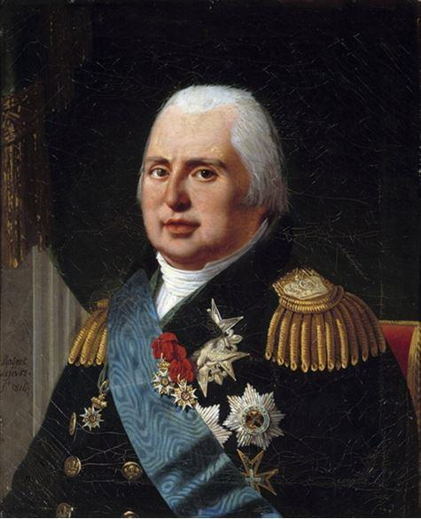À Paris, la position de Pozzo est unique. Il est diplomate, ambassadeur, mais il est également le médiateur personnel entre Louis XVIII et Alexandre I. On peut dire qu’il prétend au rôle de représentant principal de la coalition alliée en France, et en qualité de « simple sujet » du Roi des Français, il intervient dans la politique intérieure.
À la fin de l’année 1815, sous la pression directe de l’Empereur Alexandre, le roi Louis XVIII nomme aux postes de Président du Conseil et de Ministre des Affaires étrangères le duc Richelieu, qui fut durant onze ans au service russe comme général-gouverneur d’Odessa.
Richelieu est un politique modéré, il refuse les excès des Ultras. Richelieu et Pozzo di Borgo composent un vrai duо politique. Pozzo est convaincu que dans l’intérêt de la Russie et de la stabilité européenne, il est nécessaire de préserver la France en tant que puissance forte avec un régime libéral-modéré. Il écrit au deuxième ministre des Affaires étrangères de la Russie, le comte Ioann Capodistrya: «On dira que la France offre moins de garanties de tranquillité que les autres nations. Je l’admets et j’ajoute que c’est un motif de plus pour l’associer à celles qui sont assez sages et assez sûres, pour lui en imposer pour l’exemple et pour donner au roi que nous voulons maintenir sur le trône la considération et le crédit dont il ne saurait se passer à la tête d’un tel peuple»8.
Pendant trois années le tandem du ministre et de l’ambassadeur à la tête d’un petit parti modéré auprès de la Cour peut réaliser des affaires vraiment importantes. La Chambre exceptionnelle est dissoute, la loi électorale est changée, le roi forme un gouvernement plus libéral. Mais Pozzo di Borgo n’est pas un libéral convaincu. Il est pragmatiste, et ce furent les principes du pragmatisme qui l’obligèrent à défendre le système modéré et refuser les extrêmes de toute mode.
Ce fut l’apogée de la carrière diplomatique de Pozzo. L’un des fonctionnaires remarquait dans la conversation avec le prince de Talleyrand: «Qui nous gouverne ? encore un Corse?» Pozzo di Borgo lui-même écrit : «Si la machine ne marche pas bien, il faut dire, qu’elle ne marchera pas sans moi»9.
Le 5 mars 1817 il est nommé lieutenant général et la même année le Roi Louis XVIII le fait le pair et comte de France.
***
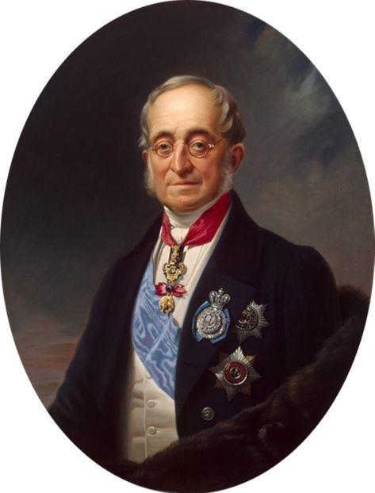Pozzo est convaincu que la France des Bourbons doit revenir dans le concert européen au plus vite. Il écrit au comte Nesselrode le 7 (19) mai 1818, c’est à dire quatre mois avant le Congrès d’Aix La Chapelle : « Nous voulons maintenir les Bourbons sur le trône comme condition sine qua non de la tranquillité de ce royaume et en conséquence de celle de l’Europe ; mais pour les maintenir il faut les respecter. S’ils sont exlus de la fédération des grandes puissances, sous quel aspect veut-on qu’ils se présentent à leurs sujets ? »10
Mais ses espérances sur le rapprochement franco-russe ne se sont pas réalisées.
En 1818, après le départ des armées de la coalition et après la réunion de France au concert européen, Louis XVIII s’oriente ouvertement vers l’union avec la Grande Bretagne. Après l’entrée sur le trône de Charle X la perspective de l’union franco-russe devient de plus en plus illusoire.
***
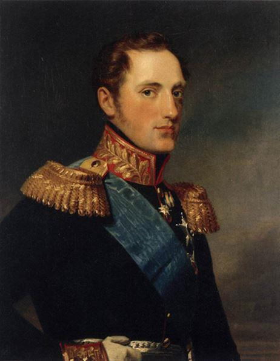Pozzo conserve son poste d’ambassadeur jusqu’à la mort de l’empereur Alexandre Ier en 1825.
Mais l’empereur Nicolas Ier, qui lui succède, ne veut pas écouter les opinions qui ne coïncident pas avec les siennes et prend seul les décisions politiques les plus importantes, sans conseils avec ses ministres. Rapidement, Niсolas Ier marque une distance avec Pozzo di Borgo qu’il n’aime pas et trouve fier. Néanmoins, l’empereur le conserve à Paris comme son ambassadeur. Le tzar sait bien que Pozzo est le diplomate dont il a besoin dans cette France révolutionnaire. Le 22 août 1826 au jour du couronnement de Nicolas Ier, Pozzo di Borgo devient comte russe et le 21 avril 1829 il est nommé général d’infanterie.
Pozzo juge l’état intérieur de la France sans optimisme. De son analyse de la situation il écrit au comte Nesselrode le 21 avril 1829 : « On compte ici les ministres avec les années, c’est un noviciat qui ne finit jamais. J’attends celui qui va commencer avec intérêt, et si les affaires n’étaient pas si graves, je dirais avec curiosité »11.
La Révolution de Juillet n’est pas inattendue pour Pozzo di Borgo. Le 13 (25) août il écrit à Nesselrode: «Charles X, aidés de jésuites réguliers et séculiers et de son homme fatal le prince de Polignac, a justifié tous les pressentiments que j'avais de sa ruine prochaine; il les a malheureusement surpassés. Vous eûtes la bonté de m'écrire de Varsovie que j’étais bien sombre sur les affaires de la France ; l’événement a prouvé que je ne l’étais pas assez...»12
Malgré les déclarations pacifiques du gouvernement de Louis-Philippe, la Révolution de Juillet et la chute de la dynastie des Bourbons sont accueillies par Nicolas Ier comme une violation de l’ordre légitime en Europe. Pour l’empereur Nicolas le roi Louis-Philippe est usurpateur du trône.
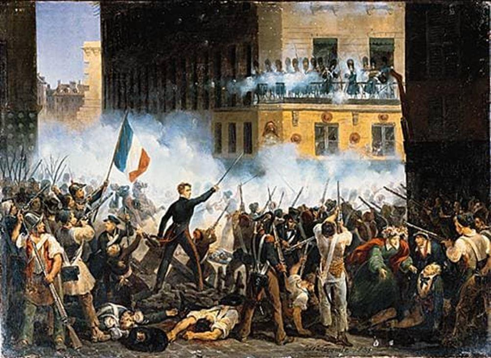Les diplomates russes reçoivent l’ordre de rester dans le rôle d’observateur et d’éviter les déclarations publiques sur le thème des changements en France. En même temps dans la dépêche du Prince Ch. Lieven (qui a remplacé Nesselrode en tant que ministre) du 8 (20) août adressée à Pozzo est prescrit de quitter Paris si les autres cabinets retirent officiellement leurs représentants diplomatiques.
Pozzo di Borgo est dans une situation difficile car il ne peut désormais pas décider de lui-même s’il doit rester à Paris. Il écrit au comte Nesselrode le 13 (25) août : «...il faudrait des nerfs de fer pour ne pas être affecté de si grands bouleversements; vous concevez à quel point je dois l'être en particulier à bien des égards; cependant je travaille à ne pas descendre plus bas que les événements et à pouvoir être encore de quelque utilité»13. Finalement Pozzo di Borgo décide de rester à Paris malgré les risques. On peut dire ainsi que c’est bien Pozzo qui choisit de conserver des relations entre les deux pays.
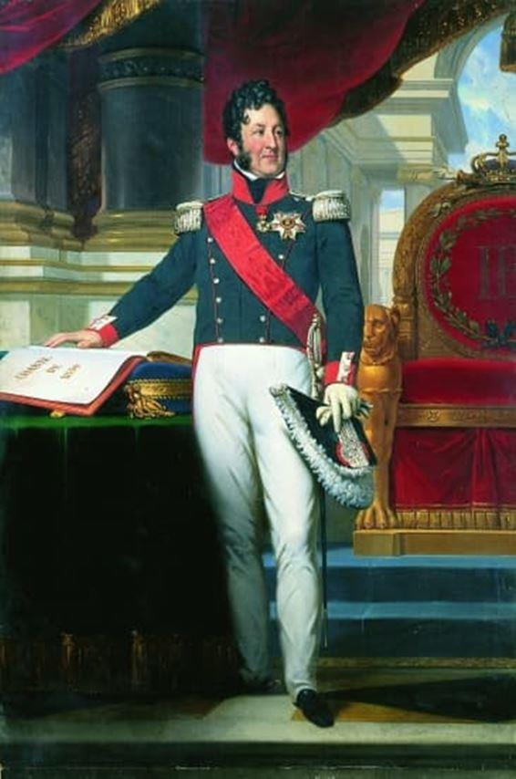À la différence de l’Empereur qui voulait organiser l’intervention armée en France avec la coopération de la Prusse et de l’Autriche, Pozzo di Borgo dès le début de la Révolution prend une position plus modérée. Il a eu, le 7 août, une conversation avec le duc d’Orléans à la veille de sa proclamation comme roi. Après celle-ci, il écrit à Nesselrode : « La prudence me conseille d’accepter ce qui se passe en France. Il est nécessaire de s’abstenir des actes d’hostilité et de cruauté, en donnant au gouvernement la chance devenir stable, régulier et pacifique »14. On peut alors dire que c’est bien Pozzo di Borgo qui, dans une certaine mesure, a incité l’empereur Nicolas à reconnaître Louis-Philippe comme Roi des Français et d’abandonner l’idée d’une intervention armée en France.
***
Finalement après que l’Angleterre, l’Autriche et la Prusse aient reconnu Louis-Philippe comme Roi, l’Empereur accepte cette reconnaissance le 19 septembre. À mon avis Pozzo a fait beaucoup pour la reconnaissance par l’Empereur du roi Louis-Philippe.
Pozzo di Borgo considère négativement la Révolution de Juillet, mais pense qu’il faut agir selon le principe du moindre mal (dans sa jeunesse il était déjà partisan des idées de Machiavel). Il faut, selon lui, reconnaître le nouveau régime politique et la nouvelle dynastie comme une mesure nécessaire pour la stabilité européenne. Cette inclinaison, il l’a proclame dans sa lettre à Nesselrode de 8 (20) septembre 1830 : « Depuis le renversement irréparable des Bourbons, je cherche à échapper à l’’installation en France la République »15.
En caractérisant la ligne politique du roi Louis-Philippe, Pozzo souligne ses intentions pacifiques et son envie d’atteindre une stabilité européenne. La guerre, écrit-il à St-Pétersbourg, provoquera en France de grands changements avec les conséquences fatales. Pozzo écrit également que le Roi ne veut pas la guerre car il craint qu'elle passe par son propre renversement16. D’autre part Pozzo pense que Louis-Philippe ne cherche pas à renforcer son pouvoir. L’ambassadeur écrit que le Roi veut la paix car il ne résistera pas aux actions qui peuvent provoquer la guerre17.
Globalement Pozzo di Borgo analyse la situation en France sans optimisme. Dans une lettre particulière à Nesselrode il caractérise la forme du gouvernement en France comme une République avec une infusion de monarchie illégitime. « La situation de ce pays, mon cher comte, est indéfinissable. Une république dans la constitution et dans les lois avec une infusion, si j’ose m’exprimer ainsi, d’une monarchie semi régicide et illégitime, justement autant qu’il en faut pour ôter le caractère réel à toutes deux ; même si une telle forme de gouvernement ira, comme chaque chose qui commence, elle doit avoir son milieu avant sa fin. Pour autant un pareil assemblage ne fera jamais un gouvernement18.
En appelant la Monarchie de Juillet « anomalie » Pozzo di Borgo doute de la possibilité de former en France un système politique stable et durable. Il écrit : « Espérer, que la France dans sa situation actuelle pourra échanger sur un pied d’égalité avec les puissances étrangères... c’est se tromper. Louis-Philippe lui-même est trop faible... L’origine de son pouvoir ne peut pas favoriser la création d’un gouvernement stable et durable »19.
Encore dans les années 1830 Pozzo di Borgo souligne très exactement la faute principale de Louis-Philippe : l’absence de réformes, de mouvement. Il écrit : «...Il est capable de résister mieux que de créer»20.
***
L’un des problèmes importants dans les relations franco-russes demeure la question polonaise. Pozzo di Borgo perçoit l’insurrection polonaise de 1830-1831 très douloureusement ; il l’avait prévue dès 1815. Au congrès de Vienne il défend sa position devant l’empereur Alexandre. Comme un vrai diplomate, il voit la situation en perspective et il s’oppose à une large autonomie de la Pologne.
La suppression par la Russie de l’insurrection à Varsovie a provoqué une vague de russophobie en France. Quand, le 16 septembre 1831, les journaux parisiens rapportent l’assaut de Varsovie et la défaite des Polonais, différentes manifestations antirusses se déroulent à Paris pendant quelques jours. Les opinions antirusses et les représentations théâtrales sur les sujets russophobes deviennent une vraie tragédie pour Pozzo : ses espoirs sur le rapprochement franco-russe meurent sous ses yeux.
Sous les fenêtres de l’hôtel de l’ambassade russe on entend des cris : « À bas les Russes ! Vive la Pologne ! Vengeance ! » Les fenêtres de l’hôtel ont été défaites. Les proches de Pozzo lui conseillent de quitter Paris, mais il décide d’y rester. Bien que les relations entre deux pays soient conservées : le départ de l’ambassadeur à ce moment-là aurait pu provoquer leur rupture.
Pourtant, un peu plus tard, Pozzo di Borgo cherche à quitter Paris à la moindre occasion. Il écrit avec tristesse : « La France aujourd’hui n’est pas la même qu’elle était en 1815 quand elle était reconnaissante à Alexandre qui a conservé ses territoires, ses positions fortes et son honneur national »21. À la fin du mois de mai 1832 il part en voyage à St-Pétersbourg ; puis il visite Berlin, Vienne et Munich, pour ne revenir à Paris qu’en octobre.
La chute de ses espoirs politiques est exacerbée par son pessimisme personnel : il se croit homme fatigué par la vie. Il écrit à Nesselrode dans une lettre particulière en 1829: «...mon cher comte, mon âge ne me permet plus d’attendre longtemps ce qui peut m’arriver ou de justifier ce que je n’aurais pas encore mérité à force d'aller en arrière au terme de la carrière où nous trouvons non pas la victoire, mais la mort. Quoi qu’il en soit, tout ce qui me reste de vie et de vigueur est à l’Empereur, le passé est le gage de l’avenir »22.
À la fin du mois de décembre 1834 le comte Nesselrode prévient Pozzo di Borgo qu’il doit se rendre à Londres. Cette décision est inattendue pour Pozzo. Il écrit à Nesselrode le 23 janvier (4 février) 1835 : « En m’annonçant ma nomination à l’ambassade de Londres, vous étiez déjà convaincu que ce changement inattendu me causerait pour le moins, de la surprise »23.
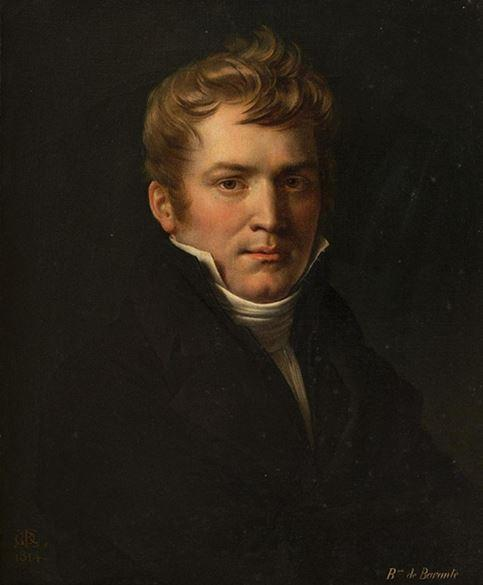En 1835, dans une conversation avec le baron Prosper de Barante, l’ambassadeur de France en Russie (1835—1841), Nicolas Ier expliquait les raisons du transfert de Pozzo di Borgo à Londres: «C’est un homme de la vieille diplomatie, je n’ai aucun besoin de sa ruse et de sa finesse; nous ne pouvions nous entendre; il a pu rendre autrefois de grands services, mais précisément parce qu’il a été employé à des missions non avouées, il a contracté des habitudes qui ne me vont pas»24.
Barante a essayé de protéger son collègue, ayant noté que Pozzo connaissait bien la France.
« La France, oui, la Russie pas du tout », — objectait l’Empereur. — Il y a passé en tout quatre mois ; et je l’avais fait venir pour qu’il fasse connaissance un peu avec la Russie et avec moi, et j’ai vu que nous ne nous comprendrions jamais »25.
Après quatre années du service à Londres le rescrit de l’empereur Nicolas du 28 décembre 1839 annonce sa démission. Les dernières années de sa vie il les passera à Paris.
***
Pozzo di Borgo était resté célibataire et on peut dire, solitaire. Rarement le visitaient les amis politiques. Les diplomates russes, le comte Palen et le comte Medem, ont oublié la route de chez Pozzo après la conclusion de la Convention de 15 juillet 1840 sur la question de l’Orient et la complication des relations franco-russes.
Vieux et malade, Pozzo di Borgo est mort le 15 février 1842 à Paris, dans son hôtel de la rue de l’Université. Il fut inhumé au cimetière du Père-Lachaise. Comme écrivait la duchesse Dorothée de Dino, « pour lui-même, comme pour les siens, il valait mieux que cette triste vie végétative se terminât. Il laisse 400 000 francs de rente, la moitié à son neveu Charles, mari de Mlle de Crillon, avec son hôtel de Paris et sa villa de Saint-Cloud ; le reste à des parents en Corse »26.
L’aristocrate corse, comte et général russe, comte et pair de France, Pozzo s’avère bien « le maréchal diplomatique » de l’Europe. En œuvrant au service des États, il pouvait associer l’indépendance de ses jugements avec ses fonctions officielles. Étranger par la naissance, par les traditions, il a pourtant défendu fortement les intérêts de la Russie, en s’exposant souvent aux risques de la disgrâce ou de la démission. Au moment des crises diplomatiques il a démontré plus du courage civil et de compréhension des intérêts nationaux que ses collègues d’origine russe.
Il a fait beaucoup pour la Russie, pour la France, pour l’Europe entière, pour les relations franco-russes. Il était le Patriarche de la diplomatie. Et à ce titre il n’était pas grave que son activité soit motivée par la haine corse, comme l’a dit le prince de Talleyrand. Les actions et les idées de Pozzo di Borgo étaient en effet non destructives mais bien au contraire constructives.
***
En vous promenant à Ajaccio, prenez la rue qui porte le nom de Pozzo di Borgo. Il y a le bistro là-bas (oui, c’est le «bistro», héritage de 1814 et du séjour des troupes russes à Paris!) avec le nom de «Bonaparte» (à Ajaccio, Napoléon est partout). Ainsi, l’histoire a réconcilié deux corses ambitieux qui ne pouvaient tout simplement pas s’entendre sur la petite île. Peut-être était-ce la raison principale de leur lutte ?
Aujourd’hui, dans le monde politique et dans le monde des affaires le nom d’un des descendants du comte Pozzo di Borgo est bien connu. C’est Monsieur Yves Pozzo di Borgo, un homme politique réputé, sénateur, membre du bureau de l’Association Dialogue franco-russe qui fait beaucoup pour former une image positive de la Russie et pour développer les contacts entre la Russie et la France.
Pour la Russie et pour la France, le nom de l’aristocrate Corse, général, « maréchal diplomatique » de l’Europe, le comte Charles-André Pozzo di Borgo est devenu un symbole d’amitié et d’union entre deux pays. C’était son désir premier…
N.T.
NOTES ET RÉFÉRENCES
1. A propos de Ch.-A. Pozzo di Borgo voir: Autour de Pozzo di Borgo, 1764-1842, cousin de Napoléon et ambassadeur de Russie: actes du colloque tenu à Alata, son village natal, sur les hauteurs d'Ajaccio les 26 et 27 mai 2017 / organisé par la Commune d’Alata et l’Association des Amis du château de La Punta; direction scientifique professeur Michel Vergé-Franceschi. Ajaccio, 2018; La Corse et les Corses dans la diplomatie. Actes du colloque d’Alata 11 et 12 mai 2018 / organisé par la Commune d’Alata et l’Association des Amis du château de La Punta; direction scientifique, professeur Michel Vergé-Franceschi. Ajaccio, 2019; Maggiolo, A. Corse, France et Russie. Pozzo di Borgo. 1764—1842. Paris, 1890; McErlean, J. Napoléon et Pozzo di Borgo. 1764—1821. Paris, 1968. 2em ed. Paris, 2007; Linkova, E. Un Corse au service de la Russie: l’influence des idées de Charles-André Pozzo di Borgo sur la pensée politique et la conception géopolitique russe // Autour de Charles-André Pozzo di Borgo (1764-1842), p. 77-85; Linkova, E. L’influence de Charles-André Pozzo di Borgo sur la creation de l’image de Napoléon en Russie // La Corse et les Corses dans la diplomatie, p. 139-150; Tanchina, N. Pozzo di Borgo et le Tzar // Autour de Charles-André Pozzo di Borgo (1764-1842), p. 57-66; Tanshina, N. An other famous Corsican // Eurasian financial & economic herald. 2018, № 3(5), p. P. 70-73; Tanchina, N. L’Empereur Nicolas et le comte Pozzo di Borgo: un regard sur la question polonaise // La Corse et les Corses dans la diplomatie, p. 125-138. Vergé-Franceschi, M. Pozzo di Borgo. L'ennemi juré de Napoléon. Paris, 2016; Tachina, N. Charles-André Pozzo di Borgo: l’ombre Corse de Napoléon (Charl’-Andre Pocco di Borgo: korsikanskaya ten’ Napoleona). Saint- Pétersbourg, Evraziya, 2020.
2. Comme écrivait le comte Piotr Viazemskyi, l’un de ses compatriotes voulait visiter Pozzo à Berlin. Quand Viazemskyi a répondu que Pozzo était à Paris, celui a dit: «Non, je parle de Pozzo qui se trouve à Berlin» // Lettres de P.A. Viazemskyi de Paris 1838-1839 // Le patrimoine littéraire, t. 31/32. La culture russe et la France (Pis'ma P.A. Vyazemskogo iz Parizha 1838-1839 // Literaturnoe nasledie. Russkaya kul'tura i Franciya). Moscou, 1937, partie 2, p. 120.
3. La note manuscrite de Pozzo di Borgo de lui-même (Sobstvennoruchnaya zapiska Pocco di Borgo o nem samom) // Le Recueil de la Société historique impériale russe. Saint-Pétersbourg (Sbornik Imperatorskogo Russkogo Istoričeskogo Obšestva), 1868, t. 2, p. 162.
4. La politique extérieure de la Russie XIX – le début XX siècle. Les documents du Ministère des Affaires étranger (Vneshnyaya politika Rossii XIX i nachala XX veka: Dokumenty Ministerstva inostrannyh del Rossijskoj Federacii). Moscou, 1972, série I, t. VIII, p. 498.
5. Ibid., p. 498-499.
6. Correspondance diplomatique du comte Pozzo di Borgo ambassadeur de Russie en France et du comte de Nesselrode depuis la Restauration des Bourbons jusqu’ au congrès d’ Aix-la Chapelle. 1814 -1818. Paris, 1897, t. 1, p. 210-211
7. La note manuscrite de Pozzo di Borgo de lui-même, p. 163.
8. Correspondance diplomatique du comte Pozzo di Borgo ambassadeur de Russie en France et du comte de Nesselrode.., t. 2, p. 502.
9. Slonimskiy, L.Z., La politique franco-russe au début de XIX siècle (Franko-russkaya politika v nachale XIX veka) // Le messager de l'Europe (Vestnik Evropy), 1891, № 2, p. 832-833.
10. Correspondance diplomatique du comte Pozzo di Borgo ambassadeur de Russie en France et du comte de Nesselrode.., t. 2, p. 505.
11. La politique extérieure de la Russie XIX – le début XX siècle. Les documents du Ministère des Affaires étranger. Moscou, 1994, série II, t. VIII (XVI), p. 180.
12. La politique extérieure de la Russie XIX – le début XX siècle. Les documents du Ministère des Affaires étranger. Moscou, 2005, t. XVII, p. 60.
13. Ibid., p. 61.
14. Maggiolo, A. Corse, France et Russie. Pozzo di Borgo. 1764—1842. Paris, 1890, p. 330.
15. Ibidem.
16. Archives de la politique extérieure de l’Empire Russe (AVPRI), Archiv Vnešnej Politiki Rossijskoj Imperii, fonds 133, inventaire 469, dossier 197, p. 76-76 recto verso, 77.
17. Ibid., p. 283 recto verso, 284 recto verso.
18. La politique extérieure de la Russie XIX – le début XX siècle. Les documents du Ministère des Affaires étranger, t. XVII, p. 542-543.
20. Ibid., fonds 187. Ambassade à Paris, inventaire 524, dossier 121, p. 11-11 recto verso.
21. Ibid., dossier 211, p. 202.
22. La politique extérieure de la Russie XIX – le début XX siècle. Les documents du Ministère des Affaires étranger, série II, t. VIII (XVI), p. 180-181.
23. Archives de la Fédération de Russie (Gosudarstvennyj arhiv rossijskoj federacii), GARF, fonds 728, inventaire 1, 938, part XXIV, p. 1.
24. Barante, P. de. Souvenirs du baron de Barante. 1782 — 1866, Paris, 1895, t. 5, p. 243.
25. Ibidem.
26. Dino, D. Cronique de 1831 à 1862. Paris, 2005, t. 3, p. 166.
Partager cette page